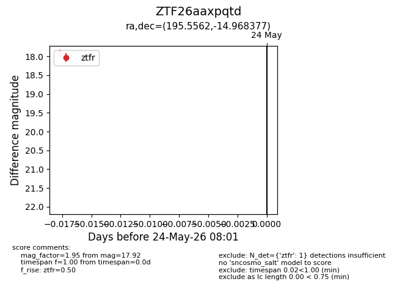
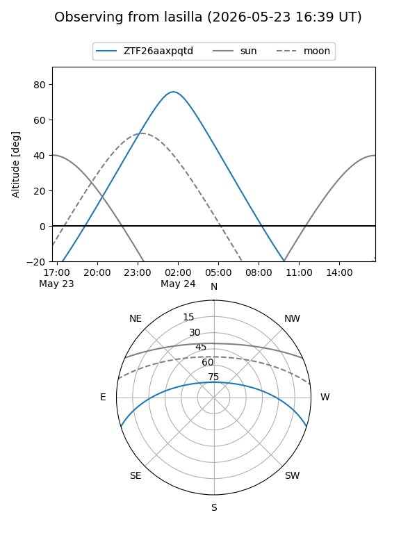
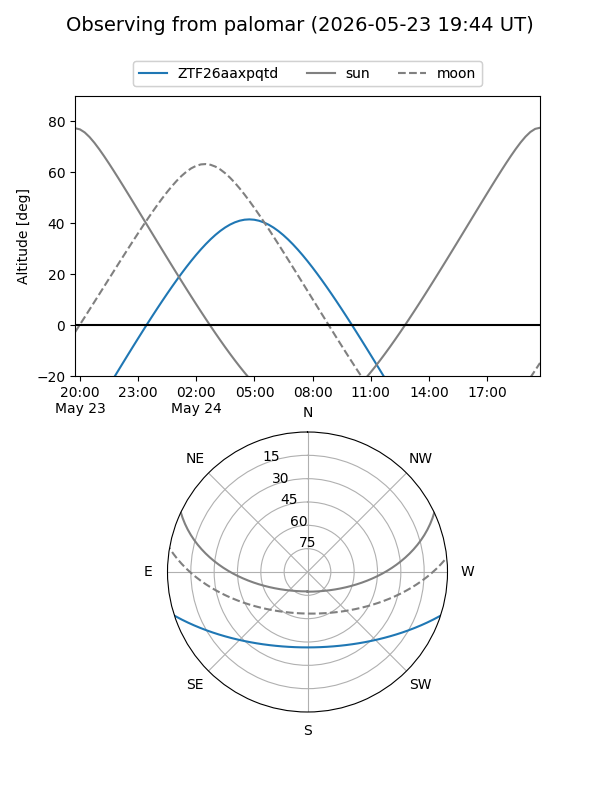
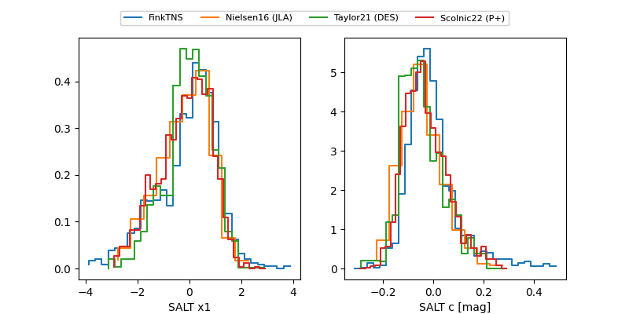

ZTF26aaxpqtd
Target ZTF26aaxpqtd at 2026-05-24 08:02
Aliases and brokers:
lsst-FINK: link
lsst-Lasair: link
lsst-ALeRCE: link
ztf-FINK: link
ztf-Lasair: link
ztf-ALeRCE: link
alt names
ZTF26aaxpqtd (ztf,fink_ztf)
Coordinates:
equatorial (ra, dec) = 195.5562,-14.96838
equatorial (HMS+DMS) = 13:02:13.48,-14:58:06.16
galactic (l, b) = (306.8135,+47.82206)
Flags:
Photometry:
last ztfr=17.92
1 ztfr detections
Lightcurve

Visibility


Additional plots
